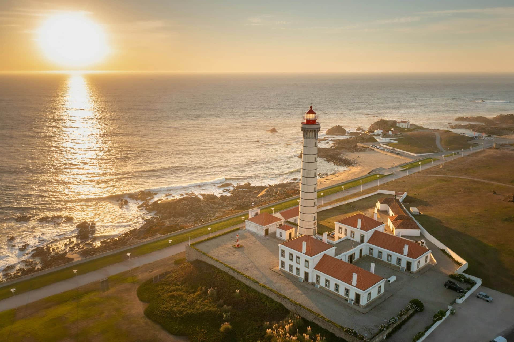

Todas as quartas-feiras, às 18h00, na sala B12.
O clube é aberto a todos os estudantes, com ou sem máquina fotográfica. Aprendemos a compor, a usar a luz e a editar, e fazemos uma saída por mês.

Fotografia da saída de outubro, ao farol.
Para te inscreveres, preenche o formulário de inscrição.